Jacob Riis — overlay proofs
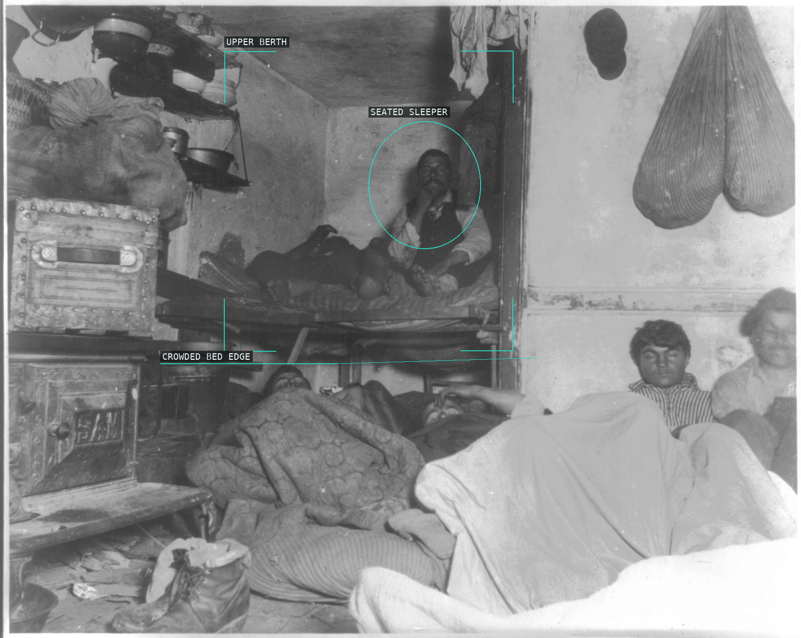
01 Five cents a spot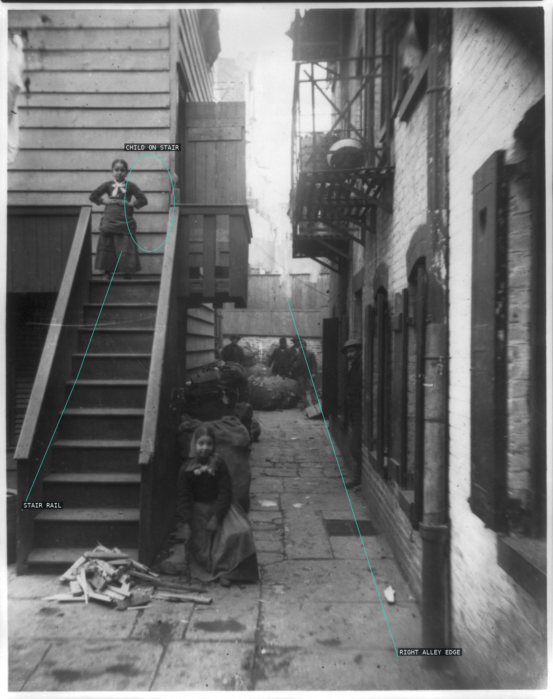
02 Baxter Street Alley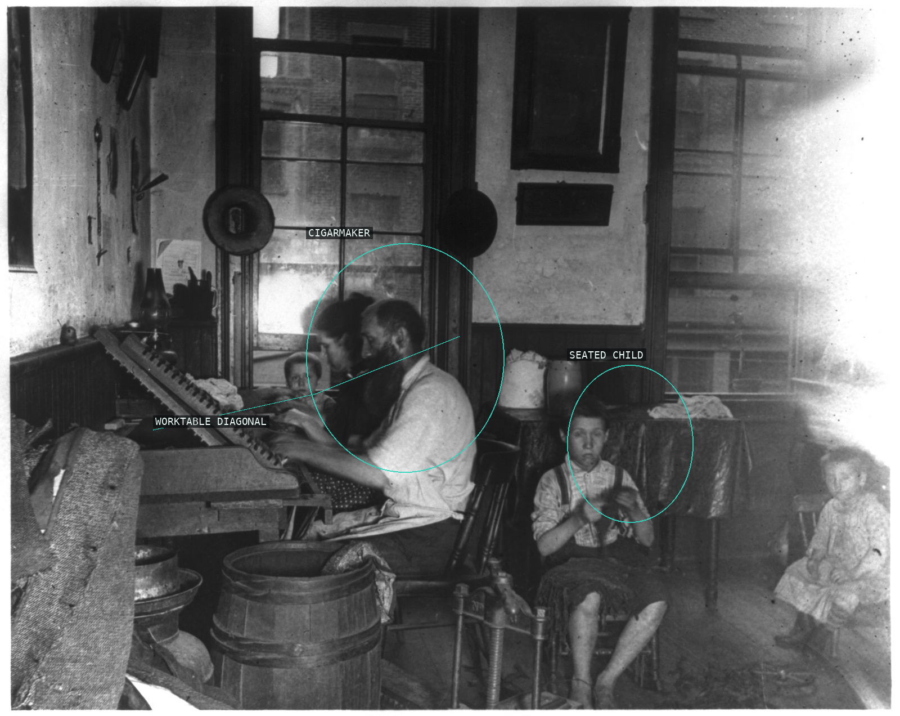
03 Bohemian cigarmakers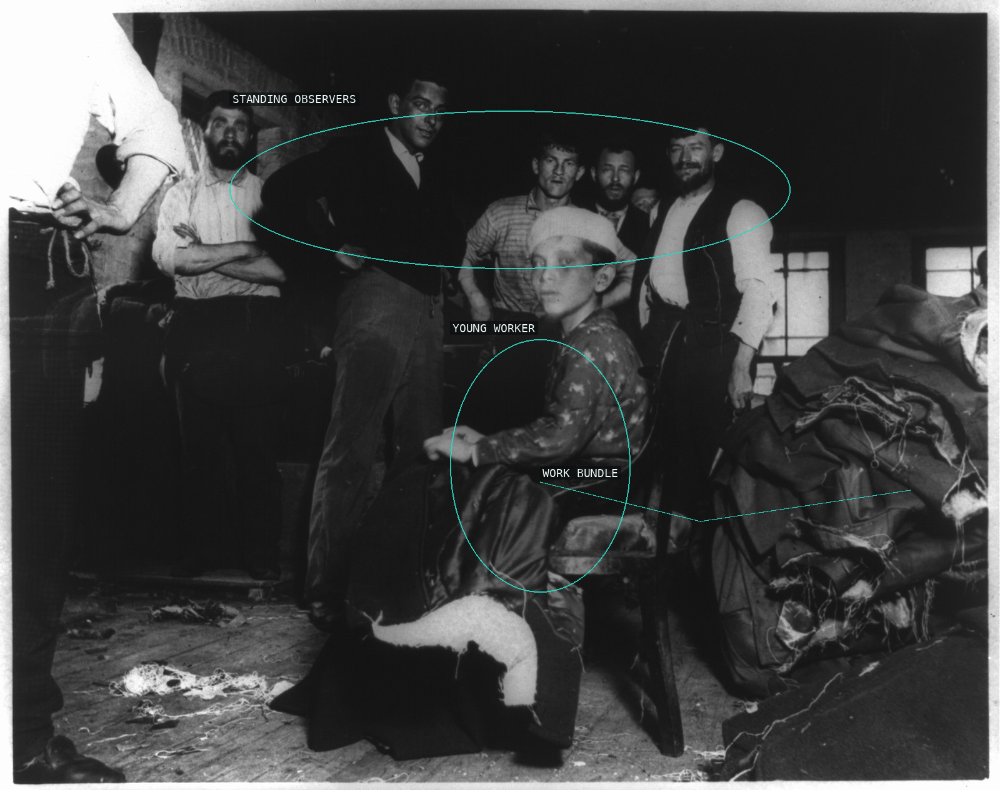
04 Pulling threads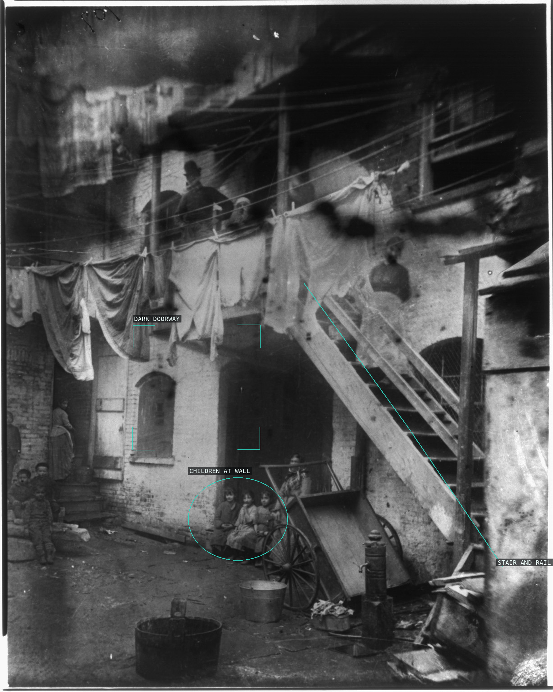
05 Court at 24 Baxter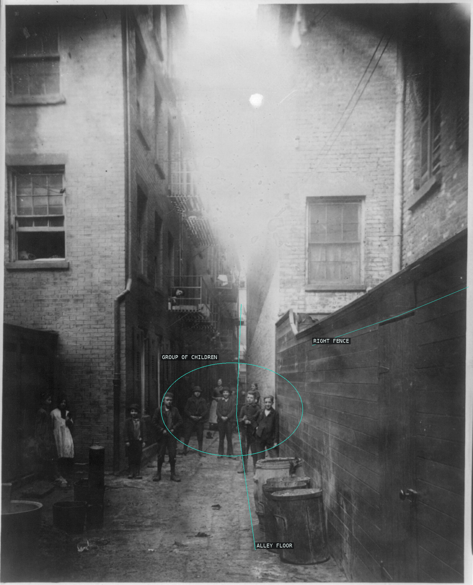
06 Mullen's Alley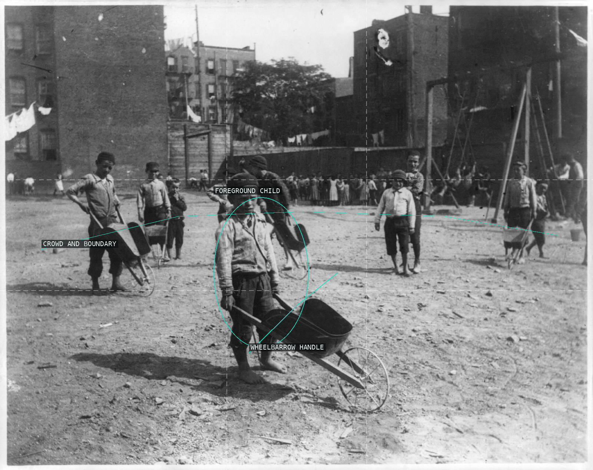
07 Poverty Gap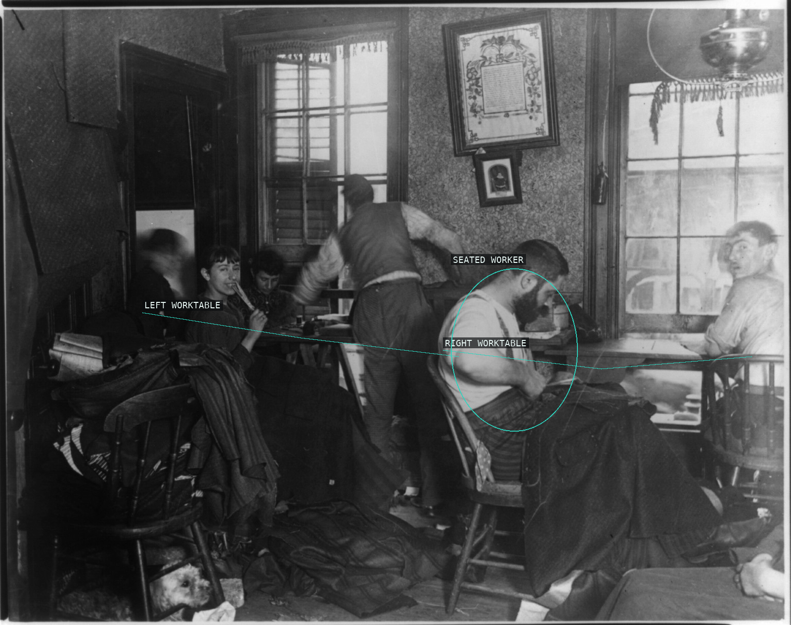
08 Ludlow Street sweatshop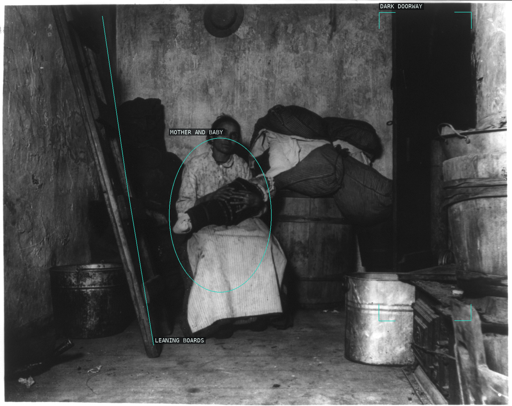
09 Italian mother and baby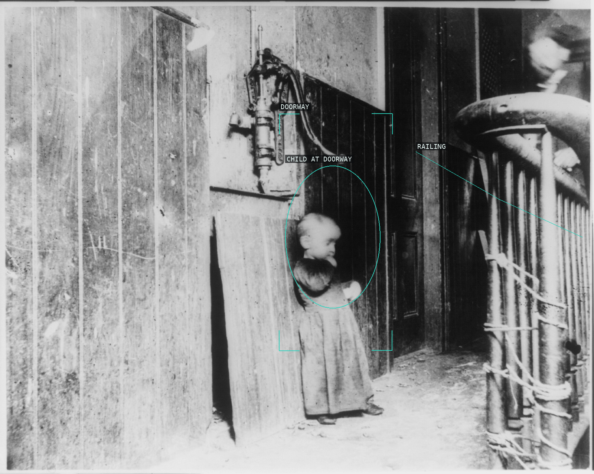
10 Baby in tenement hallway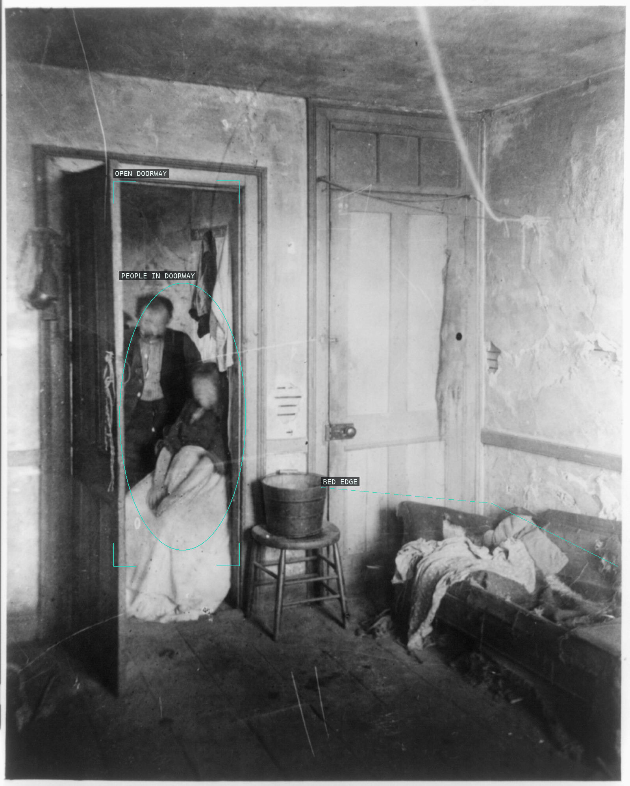
11 Flat in Hell's Kitchen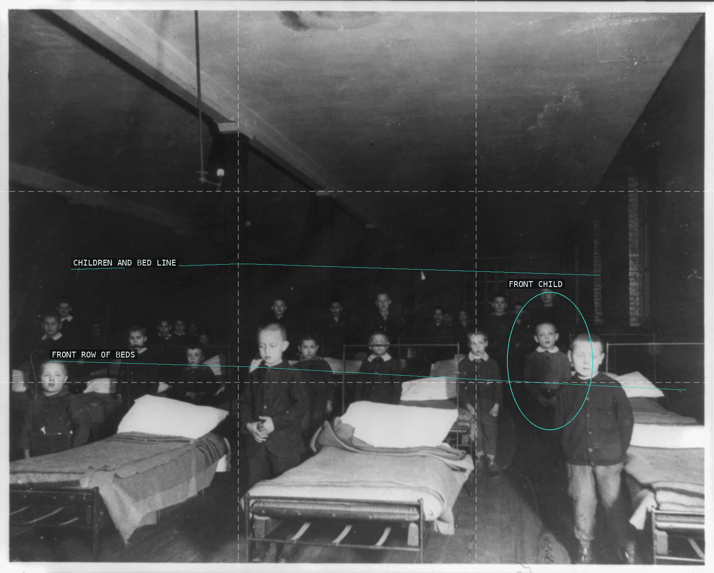
12 Going to bed